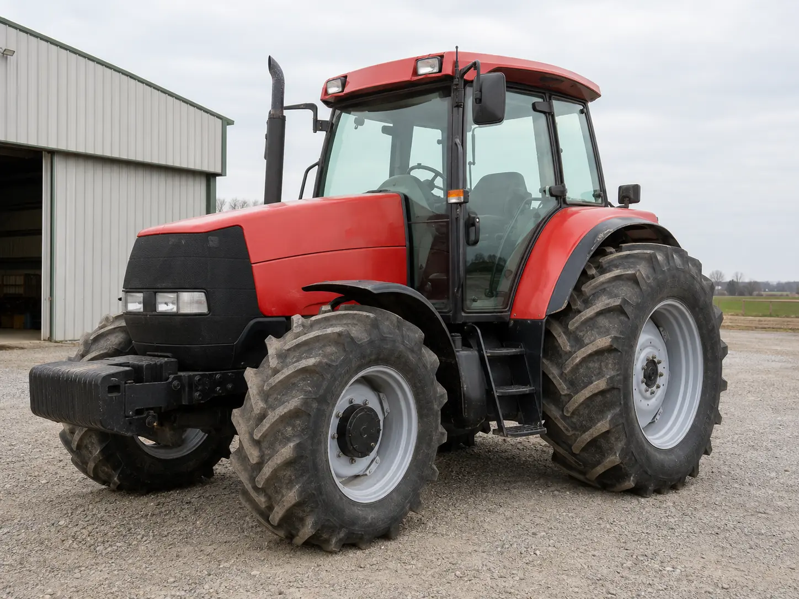
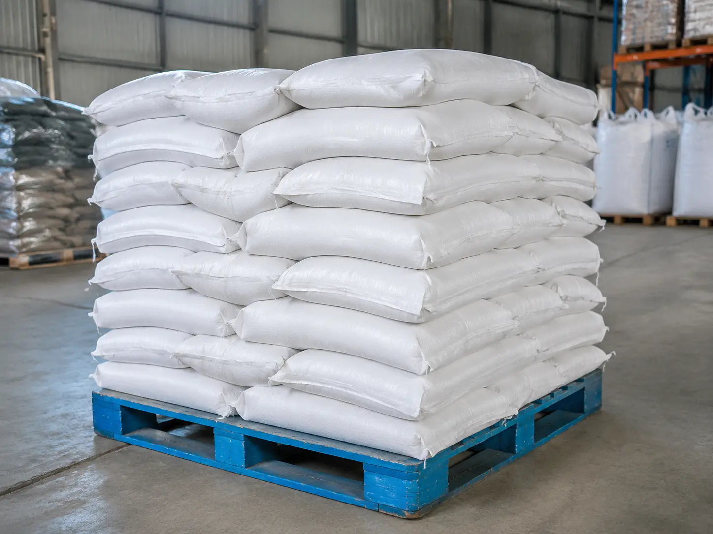
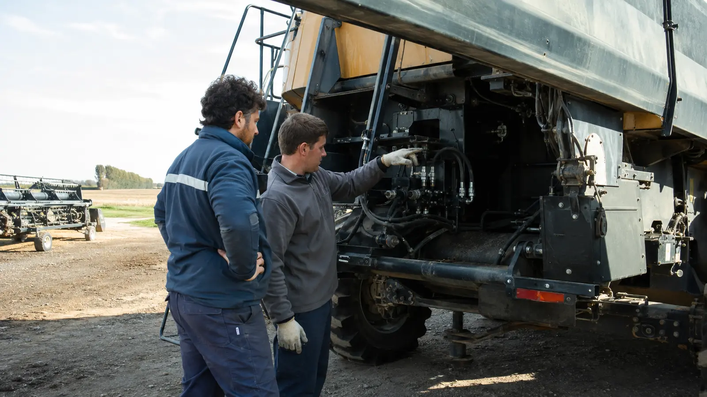

Activo de alto valor
Tractor 4×4 · 2019
$ 98.000.000
Información de la publicación visibleVer operación

Compará maquinaria, insumos, servicios y logística con los datos que definen cada operación.


